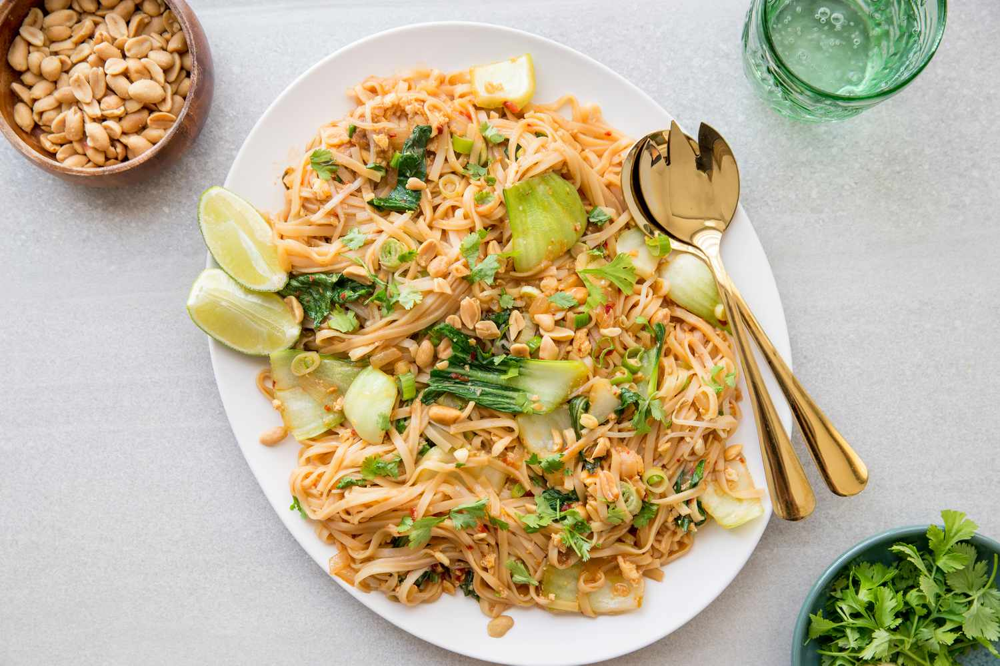
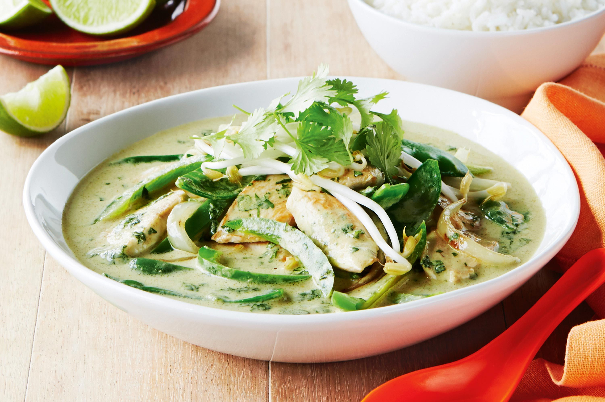

250 gm chicken supremes
1 tsp ginger
1 tsp garlicA big pinch of turmeric
1 tsp soy sauce1 tsp red chilli paste
1 tsp olive oil1 Lemon (juice)
For the peanut sauce:
1 cup peanuts (crushed coarsely)
1 medium onion1 tsp ginger1 stalk lemon grass (chopped)
2 lime leaves
2 tsp oil1 tsp red chilli paste
2 tsp jaggery1 cup coconut milk
1/2 cup tamarindSalt and pepper to taste
1.Marinate the chicken with all the ingredients. Thread them on to skewers.
2.And cook evenly on all sides.For the
peanut sauce:
1.In a pot, sweat off the onions, ginger, lemon grass, lime leaves.
2.Add in the crushed peanuts and the red chilli paste. Mix in the jaggery/palm sugar.
3.Finally add the coconut milk.
4.Simmer and blend. Season to taste.

3 Tbsp Oil
4-5 tbsp Garlic , finely chopped
1/2 cup Tofu (diced) , fried
2 Eggs
120 gram Sen Lek Noodles (flat noodles) - soaked in water for 20 minutes, then drained
4 tbsp Spring Onions, finely chopped1 cup Bean SproutsPeanuts (crushed), roasted
2 tbsp Lemon Juice
1 tsp Sugar
1/2 tsp Chilli Powder
2-3 tbsp Light Soy Sauce
1 Lemon Wedge
1.In a wok or skillet, heat the oil until a light haze appears. 2.Add the garlic and fry till golden brown. 3.Add the tofu and stir briefly. 4.Break the eggs into the wok mixing quickly while they cook. 5.Add the noodles, mix well, then add the spring onions, half the amount of peanuts and beansprouts. 6.Stir well then add the lemon juice, sugar, chilli powder and light Soy sauce. 7.Mix it up, plate it and garnish with more peanuts. 8.On the side, arrange the remaining beansprouts leftover peanuts and spring onions with the lemon wedge.

500 gm chicken-boneless, cubed
2 Tbsp oil
1/2 cup onion-chopped fine
1 1/2 Tbsp Thai green curry paste
1 1/2 cup coconut milk
1/2 cup water
6 lime leaves-chopped1 Tbsp basil leaves-chopped fine
1 Tbsp lemon grass (thick base)-chopped fine
1. Heat the oil and add the onions, Saute till they soft.
2. Add the curry paste and stir fry to mix well.
3. Add chicken pieces, saute over high heat till opaque.
4. Add water and cook till chicken is tender.
5. Add the coconut milk, lime leaves, basil leaves and lemon grass and bring to a boil.
6. Lower the heat and simmer for 3-4 minutes and serve hot with boiled rice on the side.